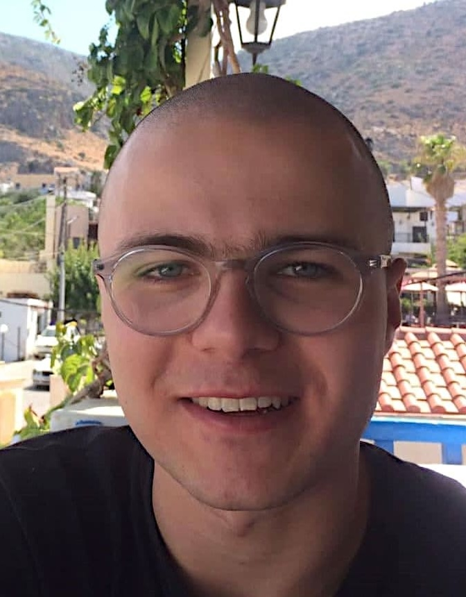
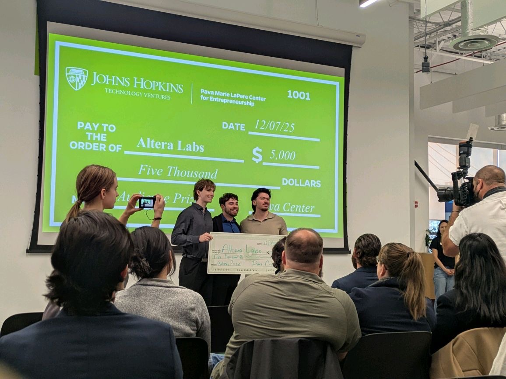
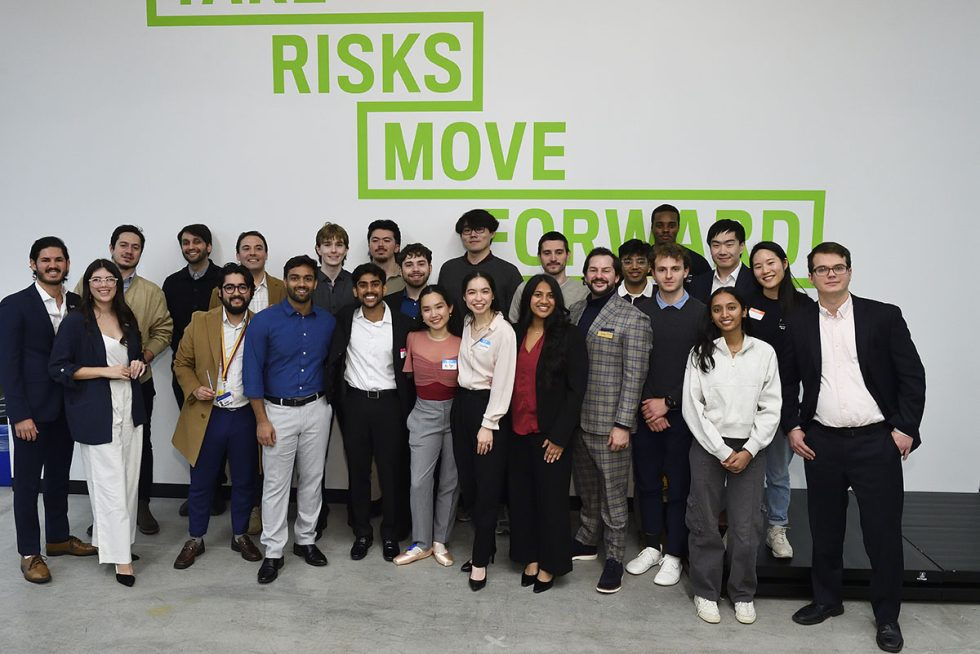
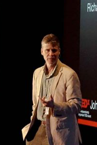

Peter Seelman
CEOJohns Hopkins University
BS, Physics · BA, Mathematics
Leads product direction and institutional strategy. Background in AI systems at JHU APL and NASA, with a focus on turning technical research into tools for real classrooms.
Altera is the AI tutor that builds a live mastery model of every student in your Canvas course, so you know exactly what to re-teach before the next class.

Current AI tools create a "substitution" effect: students bypass the reasoning that builds durable understanding. The result is measurable learning loss, and a "black box" that leaves instructors blind to what their students actually know.
OutcomeStudent bypasses reasoning entirely.
92%
88%
17%
90%
Altera builds a live, personalized map of what each student knows: the Cognitive Core. It tracks not just whether they got today's answer right, but whether the concept will still be there next month, and how solid the foundations underneath it are.

"A tool that would be indispensable to me as an instructor."Prof. Kobe Marshall-Stevens, JHU Mathematics
Five layers that turn passive AI into a system that actually teaches.
Altera uses Probabilistic Mastery Tracking to calculate the Sustainable Mastery Index (SMI), a composite metric that represents the stability and retention probability of a student's knowledge. This ensures students achieve true mastery that lasts, rather than ephemeral memorization.
Mastery Computation Chain
Per concept node, refreshed after every relevant interaction
See who's thriving, who's stuck, and exactly which concepts to re-teach before your next class.
Altera never just hands over the answer. It uses Socratic Scouting to find exactly where you're stuck and provides high-impact hints that bridge gaps, personalized to your specific learning path.
One click and your class is live. Altera syncs directly with Canvas: rosters, logins, and grades handled automatically. No new accounts, no manual setup.
Deans and program directors get a bird's-eye view of institutional performance, mapping where structural curriculum gaps are causing students to fail across courses and semesters.
This is the graph that powers every Altera tutor. Each node is a concept from a Physics I syllabus. Edges encode prerequisite, component, analogy, and conflict relationships. Student mastery is tracked per node using the live engine score.
Green nodes have high SMI (the student retains the concept long-term). Red nodes need work. Colors update after every interaction.
Bigger nodes are higher-leverage concepts. If a student masters "Newton's Second Law," downstream topics like projectile motion and friction become easier to teach.
Solid lines are prerequisites, dashed lines are components, and red lines flag conflicts with misconceptions. When a student gets stuck, the tutor walks these edges to find what's actually missing.
"I've detected a Calculation Error pattern linked to your Newton's Second Law mastery (35%). Let's revisit: if a 5kg block sits on a frictionless incline, how would you set up ΣF = ma along the incline?"
Awarded a $49,838 TEDCO Baltimore Innovation Initiative grant for "Altera Core: Adaptive Knowledge Tracking for Canvas-Native STEM Higher Education," funding a 9-month build at JHU.
Read AnnouncementAccepted into the Google Cloud for Startups program, securing cloud infrastructure credits and technical support to scale our platform.
Accepted into NVIDIA Inception, gaining access to GPU cloud credits, DGX Cloud, and NVIDIA's deep learning ecosystem to accelerate our AI engine.
Signed a commercial LTI 1.3 license with Instructure at the Integrated partner tier, so Altera ships inside any Canvas course and is listed in the Canvas partner directory.
Won the $5,000 Audience Award at the 2025 Johns Hopkins Fuel Demo Day, an audience-voted victory proving significant student and faculty interest in AI tutoring.
Read Article
Secured endorsement from Prof. Kobe Marshall-Stevens (JHU Mathematics) as primary Faculty Champion for the TEDCO Baltimore Innovation Initiative.
"I strongly believe that the platform has potential to scale to large-scale classes with hundreds of students. I am hopeful that their platform will help to better shape university environments in the years to come."Prof. Kobe Marshall-Stevens
Strategic shift from "Verifiable AI" (Lean 4) to State-Aware Cognitive Modeling. Prioritizing scalable mastery tracking over formal proof correctness.
Accepted into the JHU Pava Marie LaPere Center Fuel Accelerator. Selected as part of a high-growth cohort for ed-tech venture development.

CEO publishes "AI and Education: A Neurocognitive Perspective" at Johns Hopkins, establishing the scientific foundation for Altera's state-aware approach. The paper synthesizes research demonstrating a significant negative correlation between AI tool use and critical thinking (Gerlich, 2025).
Read PaperAltera has raised nearly $60,000 in non-dilutive funding, led by a $49,838 TEDCO Baltimore Innovation Initiative award. Our founding team has raised over $190,000 for previous ventures, progressed through the JHU Pava Center's Spark and Fuel accelerators, and completed NSF I-Corps.
Johns Hopkins University
BS, Physics · BA, Mathematics
Leads product direction and institutional strategy. Background in AI systems at JHU APL and NASA, with a focus on turning technical research into tools for real classrooms.

Johns Hopkins University
BS/MSE, Biomedical Engineering · BS, Applied Mathematics & Statistics
JHU BME and Applied Math researcher specializing in learning outcome modeling, neurocognitive data analysis, and statistical validation of product efficacy.

Johns Hopkins University
BS Computer Science · BS Applied Mathematics & Statistics
Former Amazon software engineer with expertise in full-stack development, AI systems, and rigorous software engineering practices.
Johns Hopkins University
BS, Biomedical Engineering
JHU BME researcher and outreach lead with experience in mentoring, stakeholder coordination, and program execution. Brings an educational-equity lens that helps Altera design for access, adoption, and real student outcomes.
Domain, institutional, and commercial validation from leading experts.
Mathematics Faculty, JHU
Faculty Champion & Pilot Data
Primary Faculty Champion providing direct access to our pilot cohort and the ground-truth data to validate our mastery model.

Director of Undergraduate Studies, JHU Mathematics
Institutional Adoption & Procurement
Our "voice of the customer," guiding pricing, procurement strategy, and institutional adoption pathways.
Global Developer Marketing Manager, Google
Go-To-Market & Developer Ecosystem
15+ year Google veteran who scaled developer communities and startup accelerator programs globally. Brings proven GTM playbooks and direct access to Google's developer and startup networks.

Founder & CEO, ProCounsel
Fuel Program Advisor
JHU CS & Economics alum. Bisciotti Award winner and founder of ProCounsel, an AI-powered legal discovery platform.